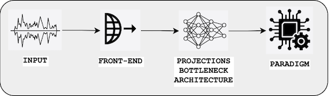
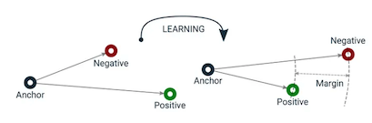
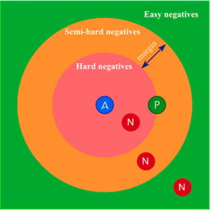
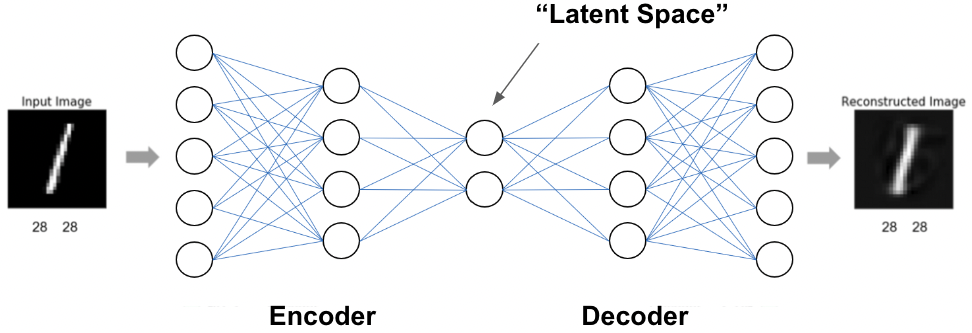

Paradigms#

We denote by paradigm the overall problem that is used to train a neural network: such as supervised, metric-learning, self-supervised, adversarial, encoder-decoder, …
Supervised#
Supervised learning is the most standard paradigm in machine learning, hence in deep learning, in which one has access to both input data \(X\) and the corresponding ground-truth \(y\).
The goal is then to define a function \(f\) (a specific neural network architecture) and optimize its parameters \(\theta\) such that \(\hat{\mathbf{y}}=f_{\theta}(\mathbf{x})\) best approximates \(\mathbf{y}\). This is done by defining a loss \(\mathcal{L}\) associated to the approximation of \(\mathbf{y}\) by \(\hat{\mathbf{y}}\). Such a loss can be
binary cross entropy (for binary classification problems, i.e. \(y \in \{0,1\}\), or multi-label problems i.e. \(\mathbf{y} \in \{0,1\}^C\),
categorical cross entropy (for multi-class problem, i.e. \(y \in \{0,\ldots, C-1\}\))
mean square error (for regression problems, i.e. \(y \in \mathbb{R}\))
Since we do not have access to the distribution \(p(\mathbf{x},\mathbf{y})\) but only to samples of it \(\mathbf{x}^{(i)}\), \(\mathbf{y}^{(i)} \sim p(\mathbf{x},\mathbf{y})\), we empirically minimize the loss/risk for a set of training examples \((\mathbf{x}^{(i)}\), \(\mathbf{y}^{(i)})\):
This minimization is usually done using one type of Stochastic Gradient Descent (SGD, Momentum, AdaGrad, AdaDelta, ADAM) and using various cardinality for \(I\) (stochastic, mini-batch, batch GD).
Self-supervised#
While in supervised learning there is a clear input/target distinction (and both are available), in the self-supervised paradigm, “targets” are typically created from the input data directly. This can mean to predict the next token in a sequence (the current, popular way of training Large Language Models), to corrupt or mask parts of the input or to augment the input with domain-specific transformations. Such manipulations or selective predictions sometimes require domain knowledge, injected by domain-informed procedures during training. This results in data representations that represent specific properties and are invariant to others. In audio, one could augment signals by changing the volume to obtain representations that are volume-invariant.
Unsupervised#
Unsupervised approaches aim to learn correlations in data without the injection of any (domain-)knowledge. This results in (typically lower-dimensional) latent spaces with high variance for input dimensions that are correlated. For example, in music, unsupervised training could result in a latent space that puts samples close when their tonality is close in the circle of fifth [ChaconLG14].
Metric Learning#
Metric learning is a type of machine learning technique focused on learning a distance function or similarity measure between data points. The goal is to map input data into a space where
similar examples are close together and
dissimilar examples are far apart, based on a certain metric (e.g., Euclidean distance).
There exist several type of supervision to achieve this
Class labels: \((\mathbf{x},\mathbf{y})\)
Pairwise similarity/dissimilarity: \((\mathbf{x}^{(1)},\mathbf{x}^{(2)},\pm)\)
Relative comparisons (triplet): \((\mathbf{x}^{(1)}, \mathbf{x}^{(2)},\mathbf{x}^{(3)}) \Rightarrow d(\mathbf{x}^{(1)},\mathbf{x}^{(2)}) < d(\mathbf{x}^{(1)},\mathbf{x}^{(3)})\)
There exist many algorithm to train such a model such as
Contrastive Loss [HCL06] in which we optimize in turns (but not jointly) the model to minimize a distance for similar pairs and maximize (up to a margin) it for dissimilar pairs
Triplet Loss [HA15] see below
The triplet loss can be extended to the multiple-loss with close relationship with Contrastive Learning (InfoNCE, NT-Xent losses).
Fore more details, see the very good tutorial “Metric Learning for Music Information Retrieval” by Brian McFee, Jongpil Lee and Juhan Nam
Triplet Loss#
The goal is to train a network \(f_{\theta}\) such that the projections of \(\mathbf{x}_A\) (an anchor), \(\mathbf{x}_P\) (a positive we consider close), \(\mathbf{x}_N\) (a negative we consider distant), satisfy the following triplet constraint:
In other words, we want \(d_{AP}\) to be smaller by a margin \(\alpha\) than \(d_{AN}\)
We solve this by minimizing the so-called “triplet-loss”:
Note: It is usual to L2-normalized the output of \(f_{\theta}\) (which then lives in the unit-hypersphere) to facilitate the setting of the \(\alpha\) value.

Figure
Triplet Loss, bringing A and P closer and A and N further appart; image source: Link
loss = F.relu(dist_pos + param_d.margin - dist_neg)
Triplet Mining#
Triplet mining is the process of selecting the triplets for training using the triplet loss. The goal is to ensure the model learns effectively by choosing the right combination of examples.
Given the choice of an A and a P, we denotes by
Easy negatives: the
Ns that are already far fromA.they do not provide much useful information (since the model already distinguishes them well).
Hard negatives: the
Ns that are very close toA(even closer than theP).they are difficult for the model to separate
this might lead to instability or overfitting.
Semi-hard negatives: the
Ns that are farther fromAthan thePbut still relatively close.they provide valuable information (because they are challenging without being as problematic as hard negatives).

Figure
Triplet mining: easy, hard, semi-hard; image source: Link
We also distinguish between
Offline mining: triplets are selected prior to training
may not adapt to the evolving model during training.
Online mining: triplets are selected during training (from the current mini-batch) using the already learned projection \(f_{\theta}\)
allows selecting the most informative triplets
Encoder-Decoder#

Figure: Schematic illustration of a canonical autoencoder.
In encoder-decoder methods, such as autoencoders, data is sent through hourglass-like architectures typically possessing a lower-dimensional bottleneck layer. Such models are trained to minimize a reconstruction error. For example, in the case of autoencoders, the output of the model should be equal to the input. In order to satisfy this objective, information needs to be “squeezed” through the low-dimensional bottleneck, effectively performing data compression. The resulting “latent space” tend to be organized in a meaningful way, where similar instances are close and specific data characteristics may correspond to particular directions in the space.
There are different formulations of autoencoder architectures, like canonical and denoising autoencoders [VLBM08], as well as Variational Autoencoders (VAEs) [KW14].
Encoder-decoder architectures can also be used in tasks where the output is not trained to be equal to the input, such as style transfer or domain adaptation (e.g., sequence-to-sequence language translation). For musical audio, domain adaptation can be achieved by encoding recordings of an instrument or genre type and decoding into another type [MWPT19].
For a more detailed explanation of VAEs in this book, see this link.
Diffusion Models#
See this link.
Generative Adversarial Networks#
See this link.